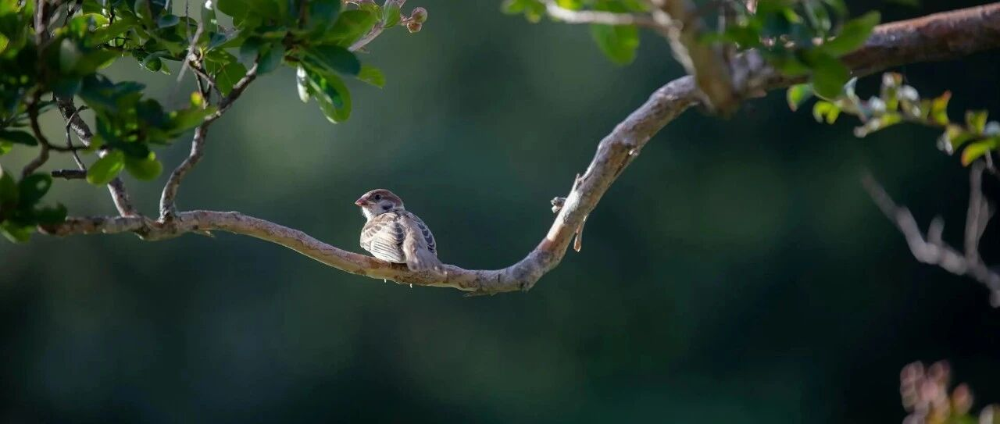

狂飙之后~
纳指和标普500双双微跌。
VISA大跌4.46%，收盘价327.8+美元。下跌的原因，是川普主张将信用卡利率设定10%的上限。
感觉又回到了被这老头主导市场走势的时刻，哈哈，我还挺喜欢这种感觉的，每次砸出个大跌，都会看看有没有买入的机会。
VISA在去年4月大跌时，只在300以下建仓和加仓了计划仓位的40%，余下的没有机会加仓，看看后续能不能蹲到一个坑位。
我观察中的摩根大通，也大跌4.19%，收盘价310.9美元，还是觉得贵，再等等看。
观察名单中的奈飞，暂时止跌了，有计划在85美元往下开始少量建仓和逐步加仓。少量配置，仓位占比计划控制在1%以内。
甲骨文准备买来做备胎的，但176一直没有触发，最低下探到176.61美元就反弹了。这个主要用来做云业务三巨头的备胎，仓位占比计划控制在1-1.2%左右。
国际账户中：日本板块最近有些个股下跌幅度较大，如任天堂等，再往下有准备适当加仓；印度板块的个股，最近波动较大，我还处于前期谨慎选股的阶段，主要是看看有没有什么机会。
国际账户的占比整体较低，英国富时是大头，其次是日本，然后是港股（只持有腾讯），最后是印度。原来国际账户在二级市场的整体占比4.5%左右，最近随着伦铜价格和其他个股价格上涨，仓位占比提升到了6.2%…
进取型账户：台积电335美元减仓了些，仓位占比从7.73下降到7.4%，整体已经都是负成本持股；
谷歌由于和苹果合作的原因，股价上涨1.1%至336美元，目前在我的进取型账户中仓位占比已经升至20%+，仅次于英伟达；微软迟迟没有触发465美元的加仓设置；
Meta下跌至631美元，短期内在650左右波动了，利空未散、利好未至。但是，每次财报出来前后，它都要么大涨，要么大跌，有点妖；
亚马逊下跌，收盘价242.6美元。我这几天会到账一笔钱款，现金储备将再创新高，后续亚马逊如果有出现215以内的机会，会考虑随着下跌逐步再加仓些；
英伟达、博通这两个芯片股，今年还是很有看头，目前没有任何操作的打算，都是负成本持股，等机会出现再买；AMD备胎今年波动预计会很大。
稳健型账户：QQQ和SPY/VOO/IVV这两个宽基指数，后续如果有下跌出现加仓机会，准备把它们俩的占比提升到70-75%；
沃尔玛移到纳斯达克上市后，股价一路上涨，并入选纳指100，最新的收盘价已经突破120美元，也因此反超了Costco，成为我稳健型账户中占比最大的负成本持股的个股；
Costco股价近期从855+开始向上修复，目前在941+美元，不久前下跌时最低点845没买到，但855加仓了些，由于目前整体是负成本持股，消费股板块又占比偏低了些，因此后续没打算减仓操作了；
看了一下账户，这些天宝洁在137.87加仓了些进来；麦当劳在290-309美元左右波动。
医药保健板块，强生上涨1.87%至213.5+美元，每次市场避险情绪浓郁时，它就上涨；礼来、联合健康、诺和诺德都微跌；
防守型账户中：SCHD最近涨幅略大，后续的加仓节点迟迟未能触发，VYM也一样；
强生、可口可乐和MO上涨修复些；伯克希尔微跌；美债和相关ETF（TLT、BIL）没动，但加仓了一些1-3年的美债ETF进来，主要是SHY。
过去几年，我在美股一直是进取型为主，资金超85成押在美股七巨头为主的科技股上，也因此收益丰厚，从2020年至今，跑出了近10倍的回报，运气非常好，赶上了这几年的好市场。
其中英伟达从2020年初至今上涨约36-37倍，我在英伟达上吃到了15.3倍回报。2023年初至2023年5月，原来的进取型和稳健型才开始分别买入英伟达，一个138-228美元买入，一个350-420美元买入，中间还操作了一些波段套利（高位减仓、低位加仓），做成负成本持股；
特斯拉总从2020年初至今上涨约16-17倍，如果叠加21年高点套现和22年低点适当抄底，23倍。我吃到了约9.5-9.8倍左右，对特斯拉的高波动一直比较警惕，所以跑输也是情理之中，目前负成本持股；
Meta从2020年初至今总回报约5.5倍，叠加中间的波段如果高位套现，22年低位抄底最高能达到11-13倍，我近两年才入局，目前吃到了约2.5-2.6倍，主要得益于波段套利做得不错，在高位减仓、低位加仓，做成负成本持股；
微软从2020年初至今总回报约3.6倍，叠加中间波段如果高位套现，再22年低位抄底最高能到10.5倍，我拿微软是2007年开始（07年至今微软涨幅43倍左右，我只有24-25倍回报），特意去看了一眼，近5年多的回报在5.3倍，略微跑赢，得益于中间低位时抄底卖进来得多，但中间也有少量卖飞，如果叠加期权护仓等综合策略，则回报在9倍左右，具体没去算，只能大致看统计；
谷歌从2020年初至今总回报7.8倍，我看了下谷歌的数据，9.2倍，一样也是得益于低点时抄底，中间因为控成本和仓位，一样也卖飞了些；
苹果和亚马逊，从2020年初至今，做高抛低吸总回报分别为7.2和6.5倍，这两个我几乎没差，一个7.5倍，一个7倍，叠加了少量期权护仓在内的缘故。一直持有正股的回报则分别为3.6和6.5倍。
其他消费和医药保健的个股，回报普遍没有科技巨头这么高，普遍在1.5-5倍，和台积电差不多；纳指100和标普500会更低。
过程中最佳操作，是均实现了负成本/负成本持股，心态非常平和。
今年开始，操作会很少，一个是更多精力回顾到家庭和生活中，陪伴孩子成长；一个是各风格的账户安全边际已经控制好，不需要我操心什么。
进取型账户会适当减仓做一些投资再平衡，把资金挪去防守型账户，做好资产安全垫的厚度；高收益很难长期持续，纯属运气好撞上了，还是要以稳为主，避免市场把账面浮盈抹平。
用防守型账户的派息分红，构筑新的现金流之一，叠加现有公司和投资产生的现金流，足以在后续市场出现机会点时去加仓。
狂飙之后，一步一量。
我个人的操作上，资金体量由小到大后，风格也开始不一样：
组合开始分散，不再集中于科技巨头；保留一定的现金和仓位，可用于下跌时的抄底，还能稳定投资心态；进取型科技股做低成本/负成本，同时构筑美债和红利股为主的防御型资产，并大幅度提升比例，平滑波动。
这样形成哑铃策略的同时，牺牲部分收益，大幅降低组合的波动性，更能拿得住。
过程中，面对市场的上涨和下跌，通过严格遵守投资纪律来约束自己的非理性冲动，不贪婪、不恐惧，始终可以通过资金调配自如地应对市场。
许多人进入市场后，心路历程会从"投资"滑向"投机"，甚至感觉像"赌博"和"被抢劫"。
要时刻谨记，投资的首要前提，是保值/不亏钱，其次才是增值/收益。
我在股市中，始终都比较谨慎，先努力去看懂企业和商业模式，以及潜在的风险，做好风险控制，然后再去追求收益。
最终目标也不是追求超高回报，而是在控制风险的同时，获得一种能持续收获企业发展带来的红利和价值持续释放（复利），心态平和且稳定的投资体验。
写着写着就写多了，发现亲子生活的内容写不下了，放下次吧。以后投资板块的内容占比会有所减少，亲子和生活类的内容占比会有所上升。
就这样吧。
免责声明：本人提供的信息仅供参考，不构成投资建议。本人的交易不代表任何立场；投资者应根据自身财务状况、投资目标等情况自主做出投资决策并承担投资风险。投资有风险，入市需谨慎。